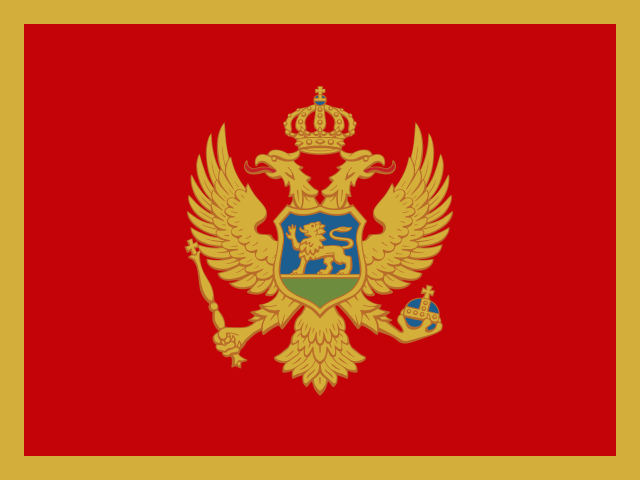

Countries › North America
Haiti
Where Haiti stands out
▲ MOST
11th Australia52.0%
Australia52.0%
12thHaiti48.6%
13th South Africa48.4%
South Africa48.4%
12th of 194 · European Space Agency (ESA) WorldCover 2021, via Food and Agriculture Organization statistical database (FAOSTAT), 2021
▲ MOST
10th Egypt6.39
Egypt6.39
11thHaiti6.19
12th Suriname6.16
Suriname6.16
11th of 159 · World Bank Food Prices for Nutrition, 2024
▲ MOST
14th Gabon38.2%
Gabon38.2%
15thHaiti37.8%
16th

Montenegro37.4%15th of 179 · International Labour Organization (ILO), via World Bank, World Development Indicators (WDI), 2021
▲ MOST
15th Tunisia15.1%
Tunisia15.1%
16thHaiti14.5%
17thAngola14.1%
16th of 176 · ILO, via World Bank, WDI, 2023
Size, sea and borders
27,560 square kilometres (km²)141st of 195
CoastlineCentral Intelligence Agency (CIA) World Factbook, 2024 edition, 2024 · web.archive.org (cia.gov)
1,771 kilometres (km)57th of 193
Number of land bordersGeoNames, 2026-08 · download.geonames.org
1140th of 195, tied with 17
Land and height
2,674 metres (m)86th of 194
Average elevationCIA World Factbook, 2024 edition, 2024 · web.archive.org (cia.gov)
470 m74th of 161
13.2% of land140th of 192
Open grass and tundraESA WorldCover 2021, via FAOSTAT, 2021 · bulks-faostat.fao.org
48.6% of the country12th of 194
36.5% of land18th of 190
People
11,637,398 people81st of 195
Population densityWorld Bank, WDI, 2023 · data.worldbank.org
422 people per km²20th of 192
23.5 years133rd of 195
64.9 years168th of 195
Under-5 mortalityUnited Nations Inter-agency Group for Child Mortality Estimation (UN IGME), via World Bank, WDI, 2024 · data.worldbank.org
52.8 per 1,000 births27th of 193
Food, power and travel
A day's healthy foodWorld Bank Food Prices for Nutrition, 2024 · datacatalog.worldbank.org
6.19 dollars a person11th of 159
Unemployment rateILO, via World Bank, WDI, 2023 · data.worldbank.org
14.5%16th of 176
Young people out of workILO, via World Bank, WDI, 2021 · data.worldbank.org
37.8%15th of 179
Working for themselvesILO, via World Bank, WDI, 2023 · data.worldbank.org
76.7%25th of 176
Horses per personFAOSTAT, 2023 · bulks-faostat.fao.org
0.04313th of 141
17135th of 189, tied with 2
Football and chess
Football internationals played, all timeInternational football results (martj42), 2026 · github.com
51376th of 193
Showing 20 highlights for Haiti. Rank counts from the highest value among the countries that have data: 1st is the most. Ties share a rank. Data version 91, 22 November 2026.
Sort Haiti against four others
The game has figures for Haiti on 171 of its 190 questions.
The same game for Android and iOS. It launches on 10 December 2026.
Out now.